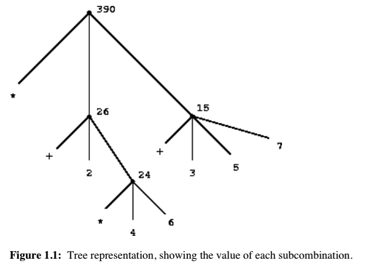

SICP相关资料整理
前言
作为一个转行人，一直以来对于计算机的基本原理怀有一颗敬畏的心。总是想把计算机相关的基础学好，但是计算机的基础也有很多，比如数据结构、算法、网络相关的各种协议，计算机组成、操作系统等等。有时候也不知道自己应该重点学习哪些内容，所以就也在不停地看各种各样的内容。算法也在看，网络也在看，组成也在看，甚至恨不得把硬件也看了。
前两天，有个高中同学在武汉大学读的软件学院，后来出国从国外回来，前两天发朋友圈的时候留言，觉得正好可以问问他。就问他，有没有推荐的关于计算机方面的基础书籍。他很直白的告诉我说他觉得 SICP 这本书是他读过的最好的书籍，强烈建议我去读。然后还非常友好的给了官网的链接以及他觉得这本书之所以好的理由：他觉得读完之后，不论看什么语言，都觉得融会贯通。这本书的重点不是语言，而是概念。
天啊，世界上竟然有如此奇特的书，可以横跨不同语言，打通任督二脉？！我一定要去看看！
艰难的开始
他推荐给我这本书的当天，我就找到了官网以及 pdf 版本的书籍（后面参考链接会附上pdf书籍的链接地址）。然后在知乎、豆瓣、quora以及google 上面搜索了相关的内容，发现在大多数人对这本书赞不绝口的同时，也有一部分人对这本书作为基础书籍提出强烈的质疑。总之，是一本颇有些争议的书籍。这样一来，鉴于自己计算机基础很弱，我对这本书稍稍有些不自信，担心自己是否可以看得懂，或者看得完。
下载下来只有就开始从头开始看。我自己看书喜欢从头开始看，所以书籍的序言、目录这些都要看，结果发现完全不知道在说什么，这样的开始确实让人头疼。实在看不下去就跳过，结果发现都看不下去，一直跳到了第一个章节……第一章节的开始就发现不知道在说什么，非常枯燥，而且说明了作者为什么采用 lisp 语言的原因，等等……作为一个只会 js 和 python 的人表示，用了不知道的语言，我就不知道该怎么看这本书了，自信心又开始不足了。然后就放下这本书，大概放了有一个礼拜多。后来有一天实在忍不住，又拿出来看，硬着头皮一点点看，静下心来看，发现似乎还是可以看得懂的。可能和自己心态急躁，想快速学成的心态也有关系，导致自己前面看不进去。
但是不论怎么样，还是觉得非常枯燥，而且概念又非常多，因为我看的是英文原版，所以看起来更是觉得满屏的概念。后来实在太吃力，就去优达学城和 FCC 的微信群里问了下大家中文版翻译的怎么样，我的本来想法是说如果翻译的还不错的话可以考虑看中文版本的。结果大家也是说法不一，有人觉得应该坚持看英文版，有人觉得应该看中文版。后来有个人说，中文版也是满屏的概念，你还不如看英文版来的直接。我觉得说的挺有道理。然后关于不会 lisp 语言，是否可以看这本书的问题。大神觉得只要有 schama 的环境就可以了，不会语言没关系，照着书里的例子在环境里写代码就可以了。
然后关于这个问题我又问了宇铎，宇铎给我的答复也是说不会语言没关系，但是一定要有一个语言的环境，可以照着写代码就 ok。
后来我随便往后翻了几页，看到了一张图

感觉突然一下就觉得这个图画的太好了，这不就是计算的过程吗？不就是程序的过程吗？程序的设计师从上而下的，而实现的过程则是从下而上的。感觉脑子里会瞬间多了一个程序的实现过程。所以一下子对这本就产生了好感。
所以从今天开始打算坚持看完这本书了。